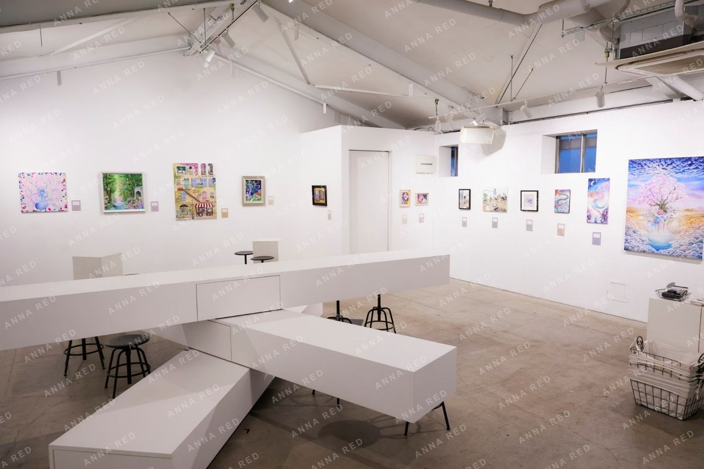
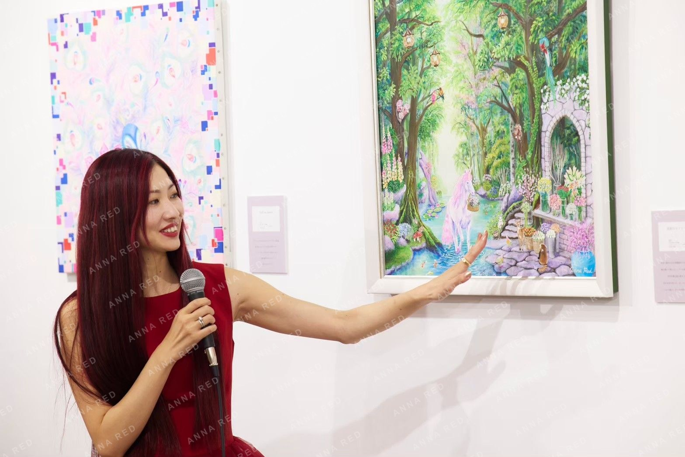
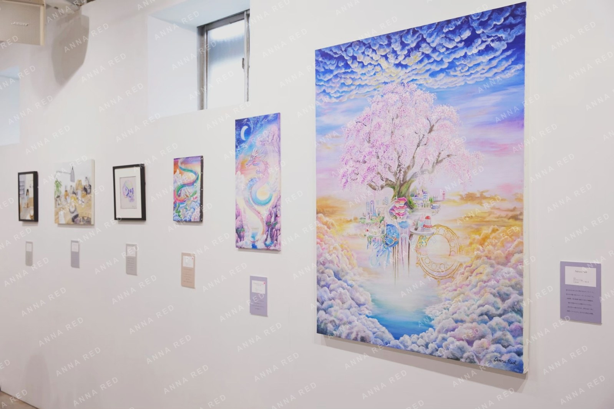
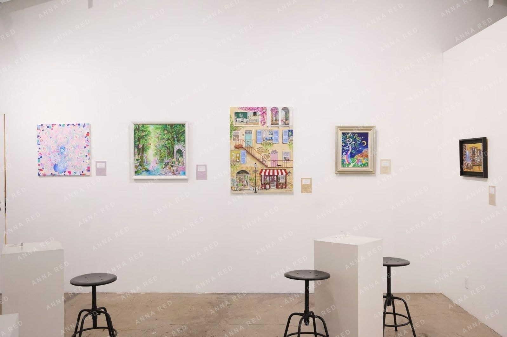
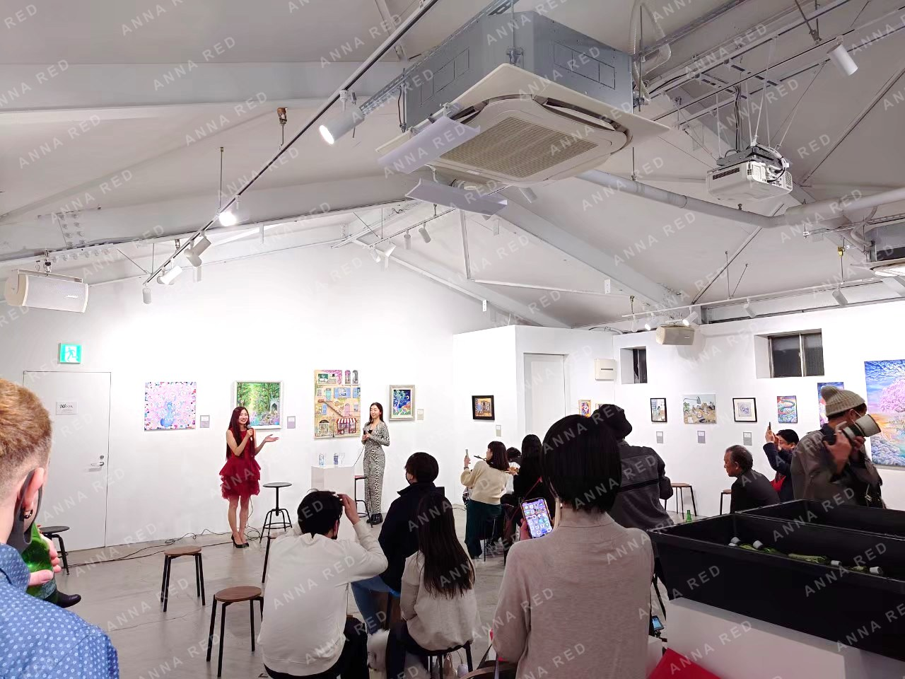

I held the solo exhibition Fantasy10 to celebrate the 10th anniversary of ANNA RED's artistic activity.
With the theme of "fantasy inspired by everyday life," the exhibition presented works that carried short story-like narratives, almost like pages from a picture book.
The paintings depict small stories that seem to appear suddenly within daily life, as well as a warm world where animals and people spend time together.
The venue was soko station 146 in Shin-Kiba. Within this space where art and cafe culture coexist, visitors were able to enjoy the work in a calm and unhurried atmosphere.
For this exhibition, pets were also welcome, and many dogs came to the venue as well. It became a very warm space where people, dogs, and art naturally blended together.


During the exhibition, I also made time to talk about the works themselves. While performing street shows overseas, I often had opportunities to speak directly about the stories and backgrounds behind my paintings. I wanted to try sharing that same way of enjoying the work in Japan as well, so this was my first attempt.
It was a wonderful experience to spend time talking about the paintings with everyone who visited.
I am very happy that I could share this 10th anniversary milestone, built through the accumulation of everyday moments, with so many people.
Thank you very much to everyone who came.

